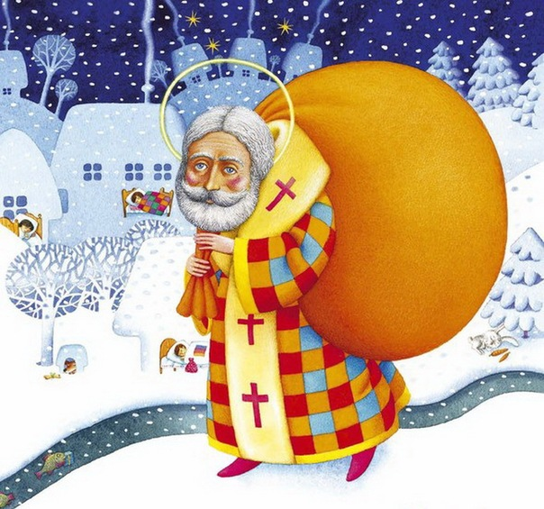

Святи́й Микола́й — святковий персонаж, добрий чарівник, якого ототожнюють з образом Миколая Чудотворця. Напередодні свята Святого Миколая, діти пишуть до нього листи зі своїми побажаннями, які кладуть у поштову скриньку або залишають за вікном. Чемним дітям Святий Миколай залишає під подушкою або у шкарпетці подарунок, а неслухняним — різку. Різка слугує своєрідним попередженням дитині, що час задуматися над своєю поведінкою і виправитися. У більшості країн Європи, зокрема в Україні, День Святого Миколая традиційно відзначається 6 грудня (19 грудня за юліанським календарем) у день вшанування пам'яті Миколая Чудотворця, єпископа Мирлікійського. Вранці цього дня діти, які були ввічливими протягом року, знаходять подарунки, заховані під подушкою або в заздалегідь заготовленій шкарпетці. Під впливом американської культури, в Європі образ Святого Миколая все частіше повʼязують саме з різдвяними святами. Різдвяна ялинка на Софійській площі, що вважається головною різдвяною ялинкою України, традиційно запалюється Святим Миколаєм 19 грудня.
Сучасний образ Святого Миколая (відомий у США як Санта-Клаус) був придуманий у 1823 році американським письменником Клементом Кларком Муром. Власне Мур у поемі «Візит Святого Миколая» (англ. A Visit from St. Nicholas), більше відомій як «Ніч перед Різдвом» (англ. The Night Before Christmas), першим зобразив чарівника як життєрадісного немолодого ельфа. Письменник також першим запряг у сани Святого Миколая північних оленів[3]. Комерційний образ Святого Миколая — це веселий дідусь з білою бородою та в червоному тулупі з червоним капелюхом. Він літає у повітрі на казкових оленях та влазить через димарі до будинків, щоб дарувати дітям і дорослим подарунки на Різдво. Теперішнім образом для персонажа послужив рекламний персонаж компанії Кока-Кола, який так сподобався дітям своїм виглядом, що саме цей персонаж став основою для створення всесвітньовідомого Санта-Клауса.
Про Святого Миколая складено безліч пісень. Зокрема в українському фольклорі відома пісня «Ой, хто, хто Миколая любить». Серед авторських пісень — «Миколай Бородатий» — пісня українського рок-гурту «Плач Єремії», вокал — Тарас Чубай. Дитяча пісня «Святий Миколай дарує нам пісні» станом на кінець 2021 року має понад 4,7 мільйонів переглядів на YouTube.
У 2018 році кінокомпанія «Big Hand Films» за фінансової підтримки Держкіно випустила фільм режисера Семена Горова «Пригоди S Миколая». Фільм розповідає про віру сучасних дітей у доброго чарівника, що приходить з подарунками вночі перед Днем Святого Миколая.